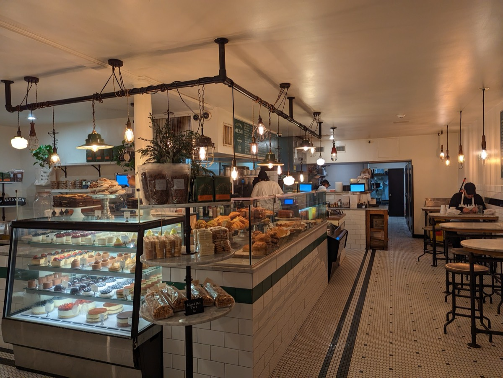
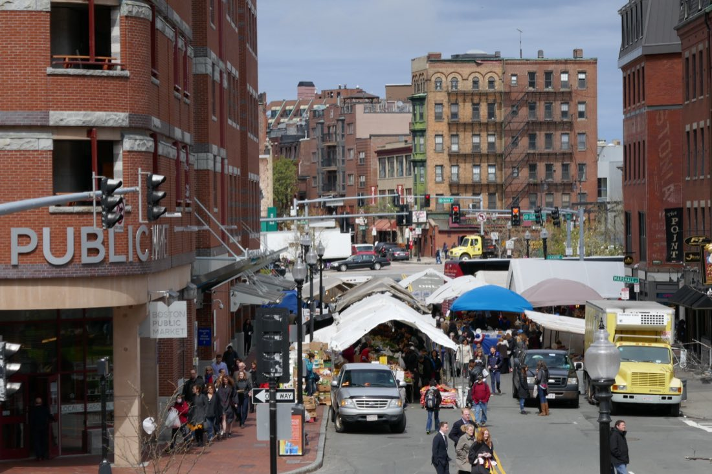
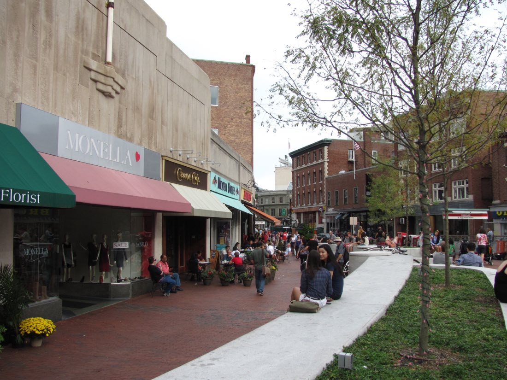

15 brunch spots across Boston, Brookline and Cambridge, sorted by neighborhood, with addresses, T stops, prices and what to order. Plus groups, cheap brunch, the boozy brunch law and how to beat the wait. Hours as of September 2026.
We've stood in the lines so you know which ones are worth it. Counter-service bakery cafes move fast; sit-down rooms with a host stand are where the 45-minute Sunday wait actually happens.
01 · Beacon Hill & Downtown
Brunch in Beacon Hill and Downtown
Where Boston brunch started. A 1937 diner and the city's most dependable bakery cafe, both on the same short stretch of Charles Street.

Charles Street · Sdkb, Wikimedia Commons (CC BY-SA 4.0)
01
Neighborhood diner
Paramount
44 Charles St, Beacon HillTCharles/MGH (Red)Walk-in only
Beacon Hill's diner since 1937. Order at the counter, then sit; no seat until you have food. Banana caramel French toast is the famous plate.
Hours Breakfast daily; weekend linePrice $12–22 per person
Local tip · Weekends, come before 9am or after 1pm.
#1
02
Bakery cafe
Tatte Bakery & Café
70 Charles St, Beacon Hill, plus many locationsTCharles/MGH (Red)Walk-in only
The most reliable brunch in the city: shakshuka, halloumi and egg sandwiches, strong pastry case. Counter service, so waits are short.
Hours Opens early daily; brunch all dayPrice $12–22 per person
#2
03
Sandwich counter
Mike & Patty's
12 Church St, Bay VillageTArlington (Green)Walk-in only
Closet-sized corner shop with some of the best breakfast sandwiches in the country. Order the Fancy (egg, bacon, cheddar, avocado, red onion) and walk to the Public Garden.
Hours Mornings to early afternoonPrice $9–15 per person
#8
Brunch is a good excuse to make it a whole morning together. Our Boston date ideas guide has what to do with the rest of it.
One serious sit-down brunch a few doors from the Paul Revere House, plus the Fort Point outpost of the city's favorite bakery.

Hanover Street · NewtonCourt, CC BY-SA 4.0
09
North End classic
North Street Grille
229 North St, North EndTHaymarket (Orange/Green)Mostly walk-in
The North End's one serious brunch spot: big American plates, lobster benedict, stuffed French toast. A few doors from the Paul Revere House. Cannoli after, per our North End guide.
Hours Breakfast and brunch dailyPrice $15–28 per person
#9
10
Bakery cafe
Flour Bakery + Café
12 Farnsworth St, Fort Point, plus Back Bay, South End, Fenway, CambridgeTSouth Station (Red/Silver) for Fort PointWalk-in only
Joanne Chang's bakery, the one every other Boston bakery gets compared to. Sticky bun, egg sandwich on focaccia, quiche. About $15 with coffee.
Hours Opens early dailyPrice $8–16 per person
#4
Walking off a big North End brunch is basically the point. Turn it into a route with our Freedom Trail challenge.
Across the river: a Turkish bakery worth the trip, a Sunday buffet for the whole family, and a deli line that's a Brookline institution.

Harvard Square · John Phelan, CC BY 3.0
11
Turkish bakery
Sofra Bakery & Café
1 Belmont St, Cambridge (Huron Village)THarvard (Red), then bus 72 or 73Walk-in only
Ana Sortun's Turkish bakery: shakshuka, Turkish breakfast plates with sesame bread and haloumi, orange blossom morning buns. The best breakfast most visitors never find.
Hours Mornings and afternoonsPrice $10–20 per person
#3
12
Sunday buffet
Henrietta's Table
1 Bennett St, Charles Hotel, Harvard SquareTHarvard (Red)Reservations: yes
New England buffet in the Charles Hotel: local eggs, smoked fish, carving station, pancakes, pastries. For graduations and family tables. Harvard weekends book a month out.
Hours Sunday brunch buffet; reservePrice Roughly $55–70 per person
#6
13
New England
Loyal Nine
660 Cambridge St, East CambridgeTLechmere (Green)Reservations: call ahead
Historically minded New England cooking: johnnycakes, smoked fish, house-baked breads. Calm room. Hours have shifted more than once, so confirm first.
Hours Weekend brunch; confirm hoursPrice $18–30 per person
14
Jewish deli
Zaftigs Delicatessen
335 Harvard St, Brookline (Coolidge Corner)TCoolidge Corner (Green C)Walk-in only
Jewish deli with breakfast all day and a Brookline-institution weekend line. Banana-stuffed French toast is the signature; latkes and hash are the sensible orders.
Hours Breakfast all day, dailyPrice $15–25 per person
#7
15
Casual & cheap
Lulu's Allston
421 Cambridge St, AllstonTHarvard Ave (Green B) or bus 66Reservations: yes
Big casual room with chicken and waffles, breakfast tacos and cheap cocktails. Student crowd, lower prices than Back Bay, takes reservations.
Hours Weekend brunch; reservationsPrice $15–25 per person
Harvard Square on a brunch weekend is full of people who just moved to the city. Our guide to making friends in Boston covers where that keeps going.
Bottomless and boozy brunch in Boston: what the law allows
Massachusetts has banned free, unlimited and time-discounted drinks since 1984. So no happy hour, and no true bottomless mimosas. You pay per drink at full price, or get a prix fixe that includes one cocktail.
Best boozy brunches within the rules: Buttermilk & Bourbon, Stephi's on Tremont, Lulu's Allston and The Friendly Toast. Afterward, see the best rooftop bars in Boston.
08
Weekday brunch and how to beat the wait
Every day, all day: Trident, Zaftigs, Cafe Landwer, The Friendly Toast, most Tattes. Paramount is calm on a Wednesday.
Weekend only: Buttermilk & Bourbon, Stephi's, Lulu's, Loyal Nine and Henrietta's Table (Sunday only).
Go early or late. No wait before 9:30am, a wall from 10:30am to 12:30pm, quick fade after 1:30pm.
Saturday over Sunday. Same place, same hour, usually 20 to 30 minutes faster.
Put your name in and walk. The Public Garden is two blocks from Paramount and Mike & Patty's.
Bakery cafes are the release valve. A Tatte or Flour is almost always ten minutes away with a ten-minute wait.
If the wait's going to be long anyway, plan around it. Our Boston weekend itinerary builds a full day out of a slow brunch morning.
09
All 15 Boston brunch spots compared
Per-person prices before drinks. Reservation policies change.
Place
Neighborhood
Nearest T stop
Style
Per person
Reservations
Paramount
Beacon Hill
Charles/MGH (Red)
Diner, order at counter
$12–22
No
Tatte
Beacon Hill and citywide
Charles/MGH (Red)
Bakery cafe
$12–22
No
Mike & Patty's
Bay Village
Arlington (Green)
Breakfast sandwiches
$9–15
No
Buttermilk & Bourbon
Back Bay
Copley (Green)
Southern, cocktails
$25–40
Yes
Trident Booksellers
Back Bay
Hynes (Green)
All-day breakfast, bookstore
$14–22
Limited
The Friendly Toast
Back Bay / Kendall
Back Bay (Orange) / Kendall (Red)
Big plates, Bloody Marys
$15–25
Yes
Cafe Landwer
Back Bay / Fenway
Arlington / St. Mary's St (Green)
Israeli cafe
$15–25
Yes
Stephi's on Tremont
South End
Back Bay (Orange)
Neighborhood brunch
$20–35
Yes
North Street Grille
North End
Haymarket (Orange/Green)
American brunch, big portions
$15–28
Mostly walk-in
Flour Bakery
Fort Point and citywide
South Station (Red/Silver)
Bakery cafe
$8–16
No
Sofra
Cambridge, Huron Village
Harvard (Red) + bus 72/73
Turkish bakery cafe
$10–20
No
Henrietta's Table
Harvard Square
Harvard (Red)
Sunday buffet
$55–70
Yes
Loyal Nine
East Cambridge
Lechmere (Green)
New England brunch
$18–30
Check
Zaftigs
Brookline, Coolidge Corner
Coolidge Corner (Green C)
Jewish deli
$15–25
No
Lulu's Allston
Allston
Harvard Ave (Green B)
Casual, cocktails
$15–25
Yes
FAQ
Boston brunch: common questions
Is there bottomless brunch in Boston?+
Almost never. Massachusetts bans free, unlimited and discounted drinks, so no happy hour and no true bottomless mimosas. You pay per drink.
What time does brunch start in Boston?+
Most spots open 8am to 10am on weekends and serve until 2pm or 3pm. Bakery cafes open around 7am.
How do I avoid the brunch wait in Boston?+
Arrive before 9:30am, pick Saturday over Sunday, or go on a weekday. Bakery cafes move much faster than sit-down restaurants.
Which Boston brunch spots take reservations?+
Henrietta's Table, Buttermilk and Bourbon, Stephi's, Cafe Landwer and Lulu's Allston. Paramount, Mike and Patty's, Zaftigs and the bakery cafes are walk-in.
Where should I go for brunch with a big group in Boston?+
Henrietta's Table, Buttermilk and Bourbon and The Friendly Toast: large rooms and reservations. Zaftigs seats big tables but Sunday waits are long.